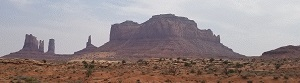
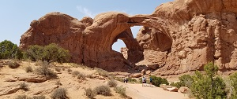
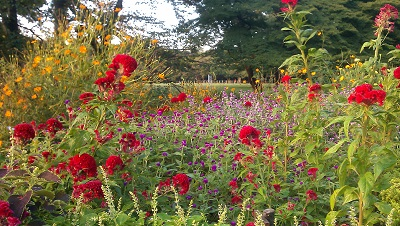
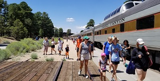
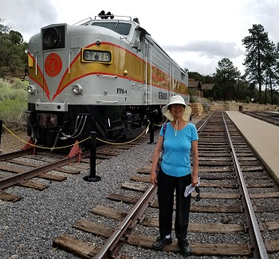
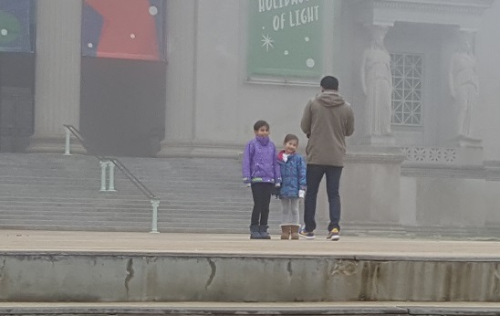
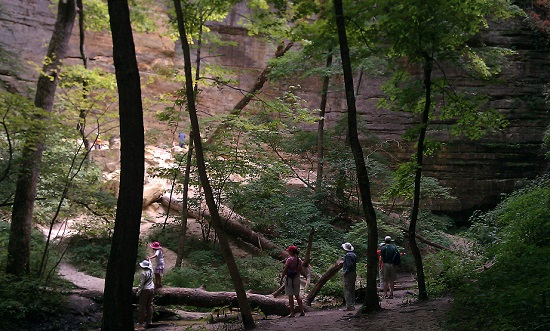
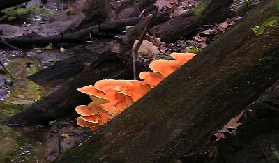
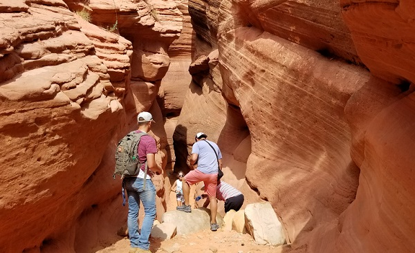

Family Excursions
- Arches National Park
-
Part of the Arizona-Utah National Parks Circuit.
After a long but fun drive through Monument Valley  we arrived in Moab, Utah and had a good night sleep. We got up early in the morning for our mountain biking tour and with about an hours worth of instructor training, we went for the beginner trail. The scenery was great, but we had to keep our eyes on the road (bumpy trail).
After four hours of riding, we drove through Arches National Park. 
- Chicago Botanical Garden
-
A beautiful garden maintain mostly by volunteers. It is beautiful every season of the year.

- Grand Canyon National Park
-
We took a nostalgic train ride from Williams, Arizon into the Grand Canyon park.  
We stayed two days and one night at the South rim in one of the park cabins. The day trips were by hiking and shuttle bus toward the East going from viewpoint to viewpoint all the way to Hermit lookout. The next day we went toward the West from viewpoint to viewpoint and ended the day with return ride to Williams by the same train.
- Japanese Garden
-
Another beautiful garden North of Rockford. While smaller in size than Chicago Botanical, it is laid out in such a way to draw you into it's serenity. As you walk around the garden, every angle in the line of sight is perfectly balanced.
- Lake Geneva
-
To be provided.
- Museum of Natural History
-
It was a gloomy day, but still great to be out and around.

- Railroad Museum
-
To be provided.
- Starved Rock State Park
-
When you need fresh air and some exercise, this is the place. It's about an hour and a half from Naperville.

...with bright orange mushrooms.
- St. Louis, Missouri
-
Content to be provided.
- Zion National Park
-
A hidden treasure was the Peek-A-Boo Canyon in the proximity of Zion National Park.

{kind=link}
{kind=link}
{kind=link}
{kind=link}